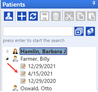

History Overview
History is used to document patient hearing history records electronically.
- Diagnostic reports and Chart Notes reports can be generated from the history information.
- The Electronic Superbill is created in History.
- NOAH testing information is integrated into TIMS in History. To run the Noah integration, you must first have NOAH 4 installed.
- There is a special section in the patient History to record Speech-Language Pathology information, along with user-designed reports.
History Patient Panel
- Double click on a patient name in the patient list to bring that name to the top of the list.
- Refreshing or leaving and returning to the History page will bring the patient name with the most recently edited history to the top of list.
- Single click on a patient name in the patient list to activate the Patient Activity and Patient Summary panels for that patient.
- An arrow in front of a patient name indicated that there are histories saved for that patient.

- A padlock icon in front of the date indicates that the History record is locked.

- A red X icon in front of the date indicates that the History was made inactive. Only users with permission may inactivate and view inactive histories. To make inactive histories visible, check the Show Inactive Histories box at the bottom of the panel.


- Clicking on the arrow will display histories for a patient for the past year.
- Click on Show All Histories icon
 for Selected Patient to display all histories for patient.
for Selected Patient to display all histories for patient. - Click
 to go to the Billing Center.
to go to the Billing Center. - Click on New History icon
 to create a new History record for the selected patient. (the created History will not be linked to an appointment)
to create a new History record for the selected patient. (the created History will not be linked to an appointment)
Each history record has a date associated with it that refers to the Visit Date. Click on the date to access the history information.
By default, every time an appointment is made for a patient, an associated history session will be created as well. By default, the history will not be visible on the tree until the day of the appointment. This feature can be turned off if desired, in Advanced Appointment Setup.
History Fields
The History Link shows the patient’s hearing history. Information can be typed as text or click on the down arrow where available. The down arrow will show a list of available field choices which will be setup History Setup.
Audiology |
|
|
Noah Modules |
Click the NOAH4 button or any other installed modules to perform NOAH functions for the selected patient.
|
|
Lock History |
If the user has been granted permission, clicking this button |
|
Inactive |
If the user has been granted permission, this check box will appear for a locked History. Making a history inactive will remove it from the patient's Activity Panel. It will not be visible in Chart Notes or any report listing history activity for patients. When making a history inactive, a reason is required and must be entered. |
|
Patient Name |
The name of the patient as shown on the patient tree. This field will be updated automatically when you highlight a patient name. |
|
Visit Date |
The date the patient is being seen. This field is automatically updated with the date you are adding the information about the patient, and can be changed as needed (if not linked to an appointment).
|
|
Seen By |
The provider who saw the patient on this visit. If the history has been auto-created from an appointment, the Seen By will default to the same provider as the appointment and cannot be changed. Otherwise, if a default provider was selected in the Patient details, then that provider will be automatically filled in. If there is no default set in the Patient, choose the provider by selecting from the drop down field. |
|
Referring |
The name of the physician who referred the patient. This will default to the Referring Physician selected in the Patient details, but can be changed as needed. |
|
History Type |
A field to document the type of visit for the patient. The default view of the testing results/evaluations will depend on whether the history type specialty is Audiology or SLP. |
|
Previous History |
The previous medical history of the patient. Click on the Previous History button |
|
Medications |
Click on the prescriptions icon Medications help for more information. |
|
Superbill |
Click this button to create, edit, or view an Electronic Superbill. See Electronic Superbill for details. |
|
Test Data |
See Test Data for details. This view will be displayed by default if the History Type is an Audiology specialty. |
|
Audiogram Right Tymp Left Tymp Reflex |
If any audiograms, Tympanograms, and/or Acoustic Reflex data have been created in Noah for the patient, the most recent ones will be displayed here. |
|
Copy |
Click the Copy button |
|
Speech |
Click the Speech button |
|
Word Recognition |
Click the Word Recognition button |
|
Test Setup |
Click the Test Setup button |
|
Report |
Click the Report button |
|
Click the Chart Notes button Notes can be printed individually or all at once. Click on the audiogram to print an individual diagnostic report for the doctor or patient. |
|
|
Tools |
Click this button |
|
Draw Tymp |
Click this button |
|
Test Results |
This view will be displayed by default if the History Type is an Audiology specialty. |
|
Update from audiogram |
If Noah Data Mining criteria have been previously setup, clicking this button |
|
Copy Results (Right/Left) |
Click either the left or right button |
|
Severity (Right) and (Left) |
The field to document the patient's history of hearing severity in each ear. Click on the down arrow to make a choice. The choices can be specified in Setup - History - Results. |
|
Configuration (Right) and (Left) |
The field to document the patient's history of hearing loss configuration in each ear. Click on the down arrow to make a choice. The choices can be specified in Setup - History - Results. |
|
Type of Loss (Right) and (Left) |
The field to document the patient’s type of loss they have in each ear. Click on the down arrow to make a choice. The choices can be specified in Setup - History - Results. |
|
Result 1 (Right) and (Left) |
The default type of test is "Acoustic Reflex". This may be changed if needed in Setup - History - Result Types, but should only be changed once. |
|
Result 2 (Right) and (Left) |
The default type of test is "Reflex Decay". This may be changed if needed in Setup - History - Result Types but should only be changed once. |
|
Result 3 (Right) and (Left) |
The default type of test is "Otoscopy". This may be changed if needed in Setup - History - Result Types, but should only be changed once. |
|
Result 4 (Right) and (Left) |
The default type of test is "Word Recognition". This may be changed if needed in Setup - History - Result Types, but should only be changed once. |
|
Result 5 (Right) and (Left) |
The default type of test is "Tympanogram". This may be changed if needed in Setup - History - Result Types, but should only be changed once. |
|
Result 6 (Right) and (Left) |
The default type of test is "Custom Type". This may be changed to whatever the practice needs in Setup - History - Result Types, but should only be changed once. |
|
Tracking |
Information about when the History record was last updated and by whom. |
|
Sessions |
The Noah Session List contains information about when the session was created and what was done. Hover over a session line to see a popup tooltip of the details. Double-click on the session line and you will be launched into the module. |
|
Diagnosis Recommendation Notes |
Open fields for entering diagnosis, recommendation, and other chart notes pertaining to the patient's visit. An unlimited number of characters can be entered in each field. You can type directly in the box for a plain text note, or if a more formatted note is desired, right-click on the text box and select Open Editor from the menu. The Notes Designer will popup. Type your text and format as desired using the toolbar buttons. You can also copy and paste text from another application. See Notes Designer for more information and Speech Recognition instructions. Context Menu - if there is a misspelled word, right-clicking on the word will display an expanded context menu with the following choices:
The Voice Recognition tool can be used to convert your spoken words to printed text. Click the microphone icon |
|
Questionnaires |
If this module has been enabled, the available questionnaires for the selected history type will be shown in the drop down field here. Choose the desired questionnaire, then click the Start button. See Questionnaires for details. |
|
Office Notes |
Additional notes that will not be printed on any Diagnostic reports. |
SLP |
If the History Type of the selected History record is an SLP specialty, this screen will automatically be shown by default. NOAH testing modules will be replaced with online SLP assessment modules. |
|
Copy |
Click the Copy button Choose the prior history session you wish to copy data from. Choose the fields you wish to copy into the current session. If user preferences have been set to copy certain fields, these will be checked by default. Click OK to copy or Cancel to abandon changes. |
|
Chart Notes (button) |
Click the Chart Notes button Notes can be printed individually or all at once. Click on the audiogram to print an individual diagnostic report for the doctor or patient. |
|
Developmental History |
Record the age in years and months that the patient achieved various developmental milestones. Milestones can be added and/or edited in SLP Setup. |
|
Reports |
Choose from the available SLP reports that have been added through the report designer. See Diagnostic and SLP Reports for more information. |
|
Behavioral Observations |
Select the appropriate evidence observed for the various listed behaviors. |
|
Communication Profile |
Record the level of various communication skills. |
|
Fluency/Voice |
Record the level of fluency/voice skills. |
|
Recommendations |
Select and enter notes for patient recommendations. Recommendations can be added and/or edited in SLP Setup. Scripted Notes can also be used in this field. |
|
Diagnosis |
If specific Diagnosis codes have been selected in the Electronic Superbill for this History, they will automatically be copied here. Otherwise, they can added as needed. Scripted Notes can also be used in this field. |
|
Goals |
Click the Edit button to add Goals for the patient. Once the goals have been added to the screen, choose the progress level - In Progress, Met, or Not Met. Goals can be added and/or edited in SLP Setup. Scripted Notes can also be used in this field. |
|
Assessments |
Choose one of the included assessments to record the date of assessment and results. |
|
Progress Notes |
Open fields for entering progress notes pertaining to the patient's visit. An unlimited number of characters can be entered in each field. You can type directly in the box for a plain text note, or if a more formatted note is desired, right-click on the text box and select Open Editor from the menu.
The Notes Designer will popup. Type your text and format as desired using the toolbar buttons. You can also copy and paste text from another application. See Rich Text Editor for more information and Speech Recognition instructions. Context Menu - right-clicking in each of the fields will display a context menu with the following choices:
|